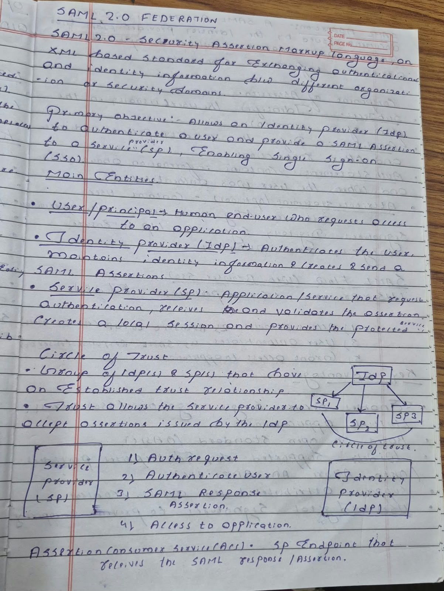
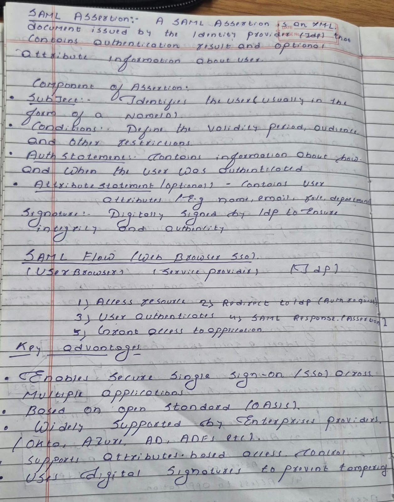
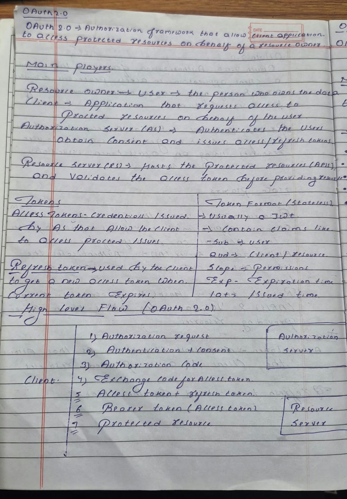
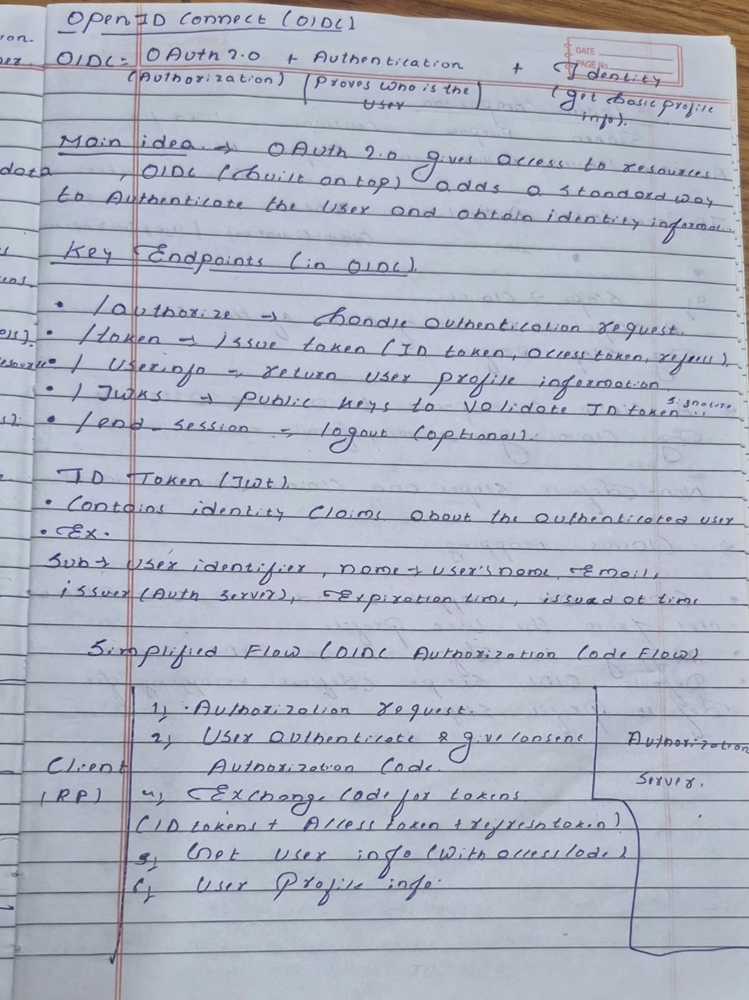

Authentication, Authorization & Federation
Security Assertion Markup Language — an XML-based standard for exchanging authentication and identity information between organizations and security domains.
Allows an Identity Provider (IdP) to authenticate a user and provide a SAML Assertion to a Service Provider (SP), enabling Single Sign-On (SSO) across applications.
A group of IdP(s) and SP(s) with an established trust relationship. The ACS (Assertion Consumer Service) is the SP endpoint that receives and parses the SAML Response/Assertion.
The three primary actors in SAML federation.
XML document issued by the IdP containing authentication result and user attributes.
NameID).AuthnRequest to the IdP.An authorization framework that allows a client application to access protected resources on behalf of a resource owner without sharing credentials.
Provides a secure, standard way for a client application to obtain limited access to user resources using an access token issued by an authorization server.
Usually a JWT (JSON Web Token) carrying claims: sub, aud, scope, exp, iat. Advantage: validated without the AS storing info about every token.
Credential issued by AS that allows the client to access protected resources. Usually short-lived, sent to RS using Bearer token, and represents granted scopes/permissions.
Used by the client to obtain a new access token when the current access token expires without requiring user re-authentication.
Identity layer built on top of OAuth 2.0 to authenticate users and obtain profile information.
OAuth 2.0 provides access to protected resources. OIDC builds on OAuth 2.0 and adds standardized authentication and identity information.
Allow a client to verify the identity of an end user and obtain basic profile attributes.
Four core capabilities layered onto the OAuth 2.0 framework.
The three interacting roles in an OpenID Connect exchange.
Standardized HTTP endpoints defined in the OpenID Connect specification.
| Endpoint | Purpose & Description |
|---|---|
/authorize |
Handles authentication request |
/token |
Issues tokens |
/userinfo |
Returns user profile information |
/jwks |
Public keys to validate ID token signature |
/end_session |
Logout |
sub → user identifiername → user's nameemail → user's emailiss → issueraud → client IDexp → expiration timeiat → issued-at timeEnd-to-end authentication and token issuance workflow.
client_id, scope=openid, and redirect_uri to the OIDC Provider./token to receive ID Token + Access Token (and optional Refresh Token)./userinfo endpoint.High-level comparison across primary use, token formats, and enterprise use cases.
| Feature | SAML 2.0 | OAuth 2.0 | OpenID Connect (OIDC) |
|---|---|---|---|
| Primary Use | Authentication | Authorization | Authentication (identity layer) |
| Token Format | XML Assertion | Access Token (JSON) | ID Token (JWT) |
| Typical Use Case | Enterprise SSO | API access | Modern web/mobile SSO |
Core principles to review before the 5-minute explanation walkthrough.
sub, aud, scope, exp, iat) validated by the Resource Server without database lookups.OIDC = OAuth 2.0 + Authentication + Identity. It standardizes user authentication on top of OAuth 2.0./authorize, /token, /userinfo, /jwks, and optional /end_session for full identity lifecycle management.Scans of the original whiteboard and notebook lecture notes for Day 1.



